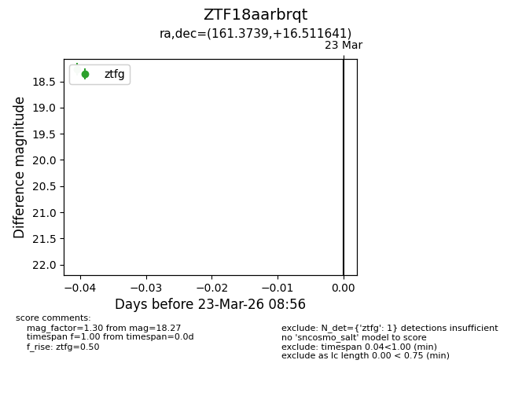
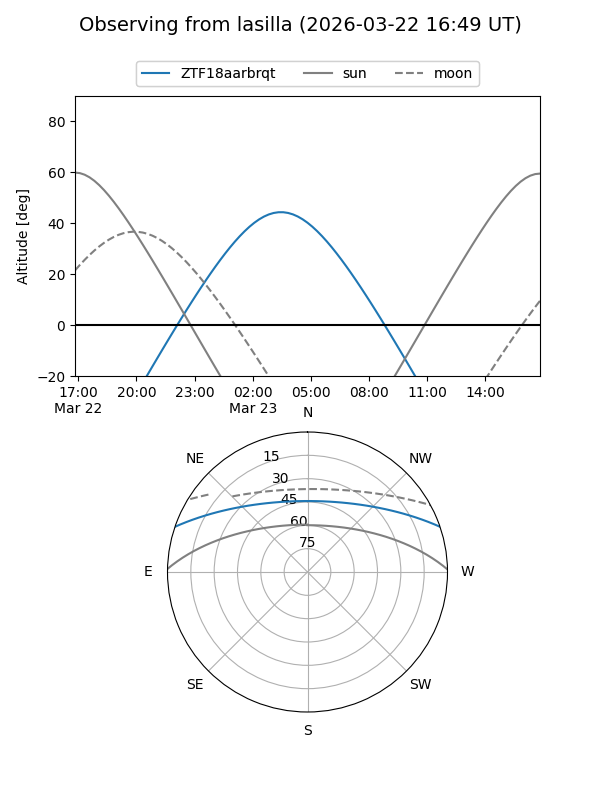
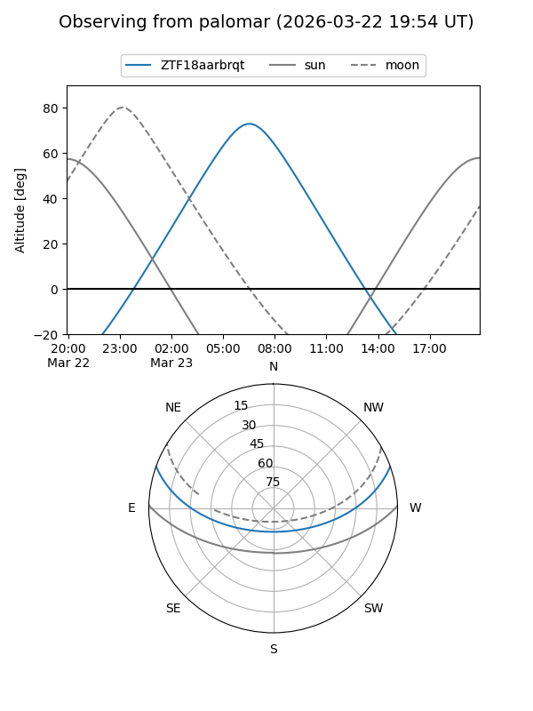

ZTF18aarbrqt
Target ZTF18aarbrqt at 2026-03-23 08:58
Aliases and brokers:
FINK: link
Lasair: link
ALeRCE: link
alt names
ZTF18aarbrqt (ztf,fink_ztf)
Coordinates:
equatorial (ra, dec) = 161.3739,+16.51164
equatorial (HMS+DMS) = 10:45:29.73,+16:30:41.91
galactic (l, b) = (226.3943,+59.00961)
Flags:
Photometry:
last ztfg=18.27
1 ztfg detections
Lightcurve

Visibility


Additional plots